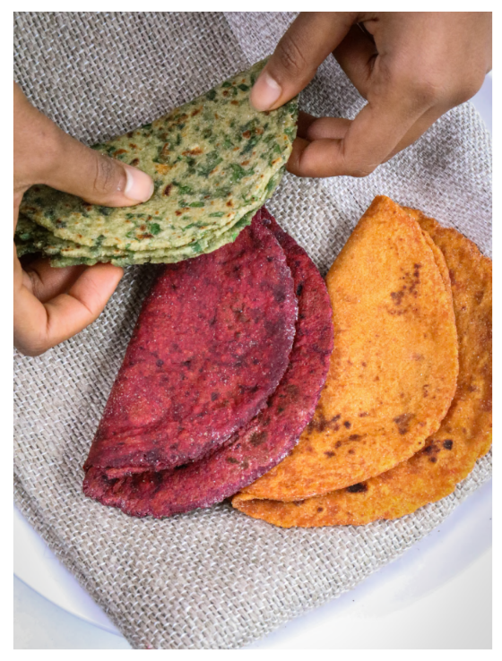

Ingredients
- 50% wheat flour
- 50% any seasonal vegetable
Method
- Take one cup of any seasonal vegetable (grated) & one cup of wheat flour.
- Combine together. Use water if required. Make a dough & divide it into balls. Dip the balls in flour and flatten them.
- Roll the balls with a rolling pin.
- Mix the vegetable with wheat flour
- Heat a clay tawa on low heat and cook the chapati on it. Do not use oil or ghee.
Return to top
Return to main page